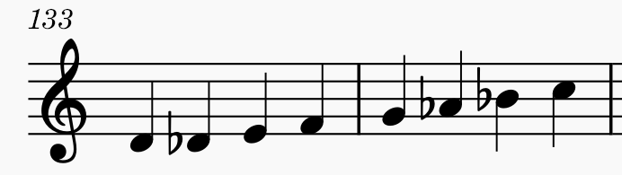

作曲・アドリブソロに使える色々なスケール紹介
ジャズを始めました！という方や、作曲を始めました！という方のためのスケール(音階)を知ることができるHPです。
全てkeyはCの楽譜と音源になっています。
スケールの雰囲気を感じてみてください。自分でその音を使って演奏してみてください！
スケール名をクリックすればそのスケールについてのページに飛べます。
チャーチモードスケール
メジャースケールの音の並び(全全半全全全半)を、いろんな場所から始めた音階。
例えば、普通のメジャースケールのドレミファソラシド(=全全半全全全半)で、レの音から弾くとドリアンになり(レミファソラシドレ=全半全全全半全)、
ミの音から弾くとフリジアンになります(ミファソラシドレミ=半全全全半全全)。
始める場所によって雰囲気が変わりますね！


ペンタトニックスケール
この２つは始まる場所が違うだけで、音の並びは一緒。特にマイナーペンタはロックでよく使われます。
マイナーペンタを使って演奏すると、なんかかっこいい雰囲気になるよ！
バンドのソロで何を弾いたらいいか分からないって人は、とりあえずこれを使いこなせるようになろう！
やっぱりいろんな人のソロを真似して習得するのがおすすめです。
.png)

ブルーススケール、ブルーノートスケール
この二つは始まる場所が違うだけで、音の並びは一緒。ペンタトニックにブルーノートを１音足した音階です。
ブルースでよく使われます。これを使えば、なんかブルージーな雰囲気になるよ！
ジャズ初心者さんには、ソニー・クラークさんのCool Struttin'を聴くのがおすすめ。
ブルーススケールを多用しためちゃくちゃかっこいいソロです。


その他
- メロディックマイナー(Melodic Minor)
- ハーモニックマイナー(Hrmonic Minor)
- フリジアン#3(Phrygian#3),ハーモニック・マイナー・パーフェクト・フィフス・ビロウ 
- スパニッシュ(Spanish),
- ホールトーン(Whole Tone)
- オーギュメント(Augument)
- ディミニッシュ(Diminished)(WHWHWH)
- ディミニッシュ(Diminished)(HWHWHW),コンビネーション・オブ・ディミニッシュ
- ハーフディミニッシュ(Half Diminished),ロクリアン#2(Locrian #2)
- オルタード(Altered)
- アコースティック(Acoustic),リディアン♭7(Lydian♭7)


私が１番好きな音階！綺麗！
ハーモニックマイナーと音の並びが同じ。


なんか不思議な感じの音階！


ディミニッシュは全音と半音の繰り返し。
２つのディミニッシュスケールは、半音から始まるか、全音から始まるかの違い。


メロディックマイナーと音の並びが同じ。
これを使うとなんか一気に音の感じがジャズっぽくなる！

最後に
上達には、
①まずいろいろ曲を聴いて好きなミュージシャンをみつけてその人の真似をする。
➁コードやスケールなど、音楽理論についての勉強する。
➂好きなミュージシャンの真似をする。その人のソロの理論も考えながら真似する。
④音楽理論を使って弾きたい曲の研究をする。
って感じかなぁと思います。（私もまだ駆け出しミュージシャンですが）
使う音も大事なんですが、やっぱり雰囲気みたいなものが一番大事だと私は思います。アーティキュレーションとか、拍の取り方とか、呼吸の入れ方とか。
そこをしっかり聴いて真似するのがいいと思います。
音源に合わせて弾いた時に、憧れのアーティストにシンクロできると楽しいですよ！
一緒に頑張りましょう！